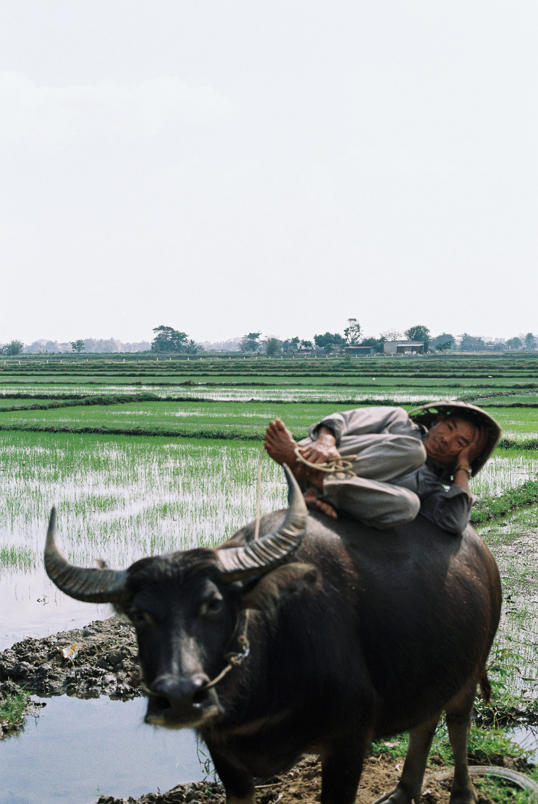
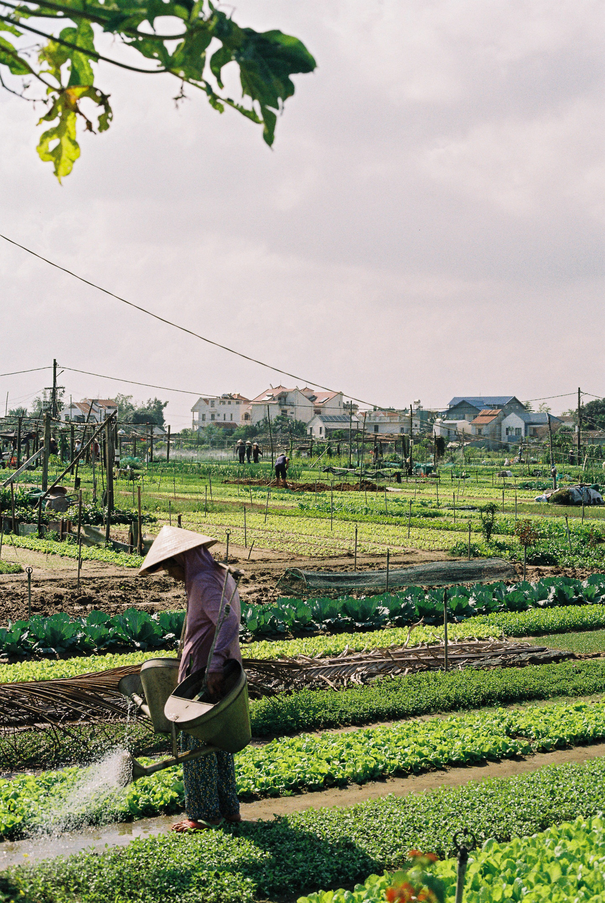
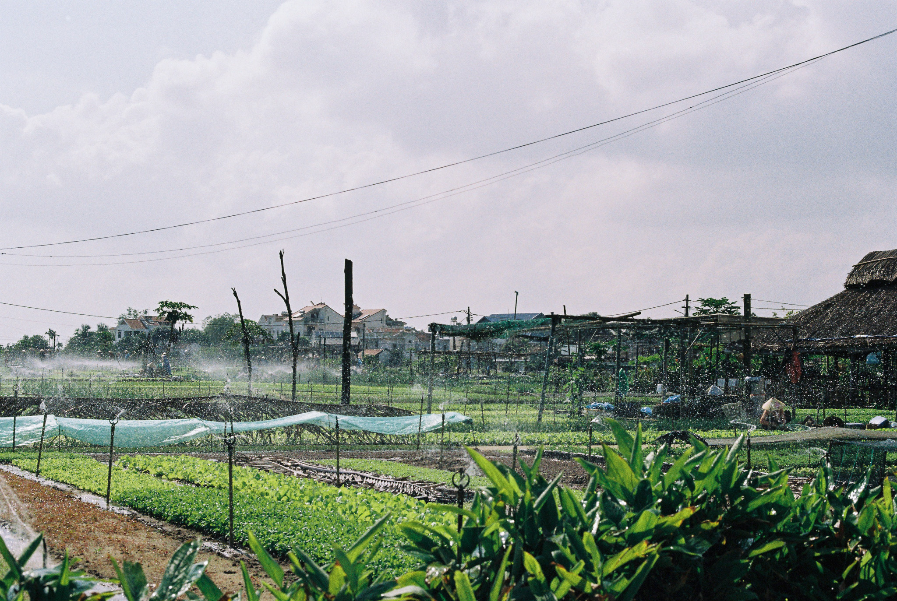

ABOUT CULVERA
Better agricultural decisions should not depend on the size of your farm.
Culvera AI is building agricultural decision intelligence for smallholder farming, bringing together environmental, agronomic and market information so complex data can become practical guidance.
We are starting in Vietnam, where a globally important agricultural sector, millions of small farms, growing climate pressure and increasingly demanding export markets make better information both valuable and urgent.
OUR STORY
Culvera started with a simple question.

Large agricultural businesses can use teams of analysts, agronomists, forecasting systems and supply chain data to support decisions.
What happens when comparable decision intelligence becomes accessible to a small farm?
Culvera began at Bocconi University in 2026 as a project exploring that question through AI, agriculture and public impact.
The first prototype connected satellite, climate, soil and agricultural data to machine learning models capable of generating location specific crop and yield information.
But the deeper challenge quickly became clear.
Building another prediction model is not enough.
Agricultural technology succeeds only when recommendations are relevant to local conditions, understandable to the person receiving them, trusted by the communities expected to use them and capable of learning from what happens in the field.
That principle now shapes the platform we are building.
OUR MISSION
Make high quality agricultural decision intelligence accessible regardless of farm size.
Culvera is designed to help bridge the gap between the amount of agricultural information that exists and the amount that reaches the individual making a decision in the field.
Our goal is not to replace farmers, agronomists or local knowledge.
It is to give them a stronger decision layer.
CLEAR OVER COMPLEX
The user should receive a decision they can understand, not a wall of raw data.
LOCAL CONTEXT MATTERS
Recommendations should respond to the conditions of a specific farm, crop and season. Real world experience from farmers and agronomists should improve the system over time.
EVIDENCE BEFORE AUTOMATION
AI should support measured evidence and expert knowledge, not disguise uncertainty.
LEARN FROM OUTCOMES
Field results should make future recommendations stronger.
A powerful place to prove the model.

Vietnam combines a globally significant agricultural export sector with a highly fragmented smallholder production base.
Farmers face climate volatility, changing soil conditions, input decisions, market uncertainty and increasingly sophisticated export requirements, often without a unified system connecting those signals.
That makes Vietnam more than a launch market for Culvera.
It is an environment where the value of better decision intelligence can be tested against real agricultural outcomes.
Our current research is concentrating particularly on the Mekong Delta, where challenges such as salinity, soil degradation and heavy metal risk demonstrate why location specific agricultural intelligence matters.
FROM GENERAL INTELLIGENCE TO SPECIFIC DECISIONS
Starting with problems where better information can change an outcome.
Our original prototype demonstrates a broad agricultural decision pipeline: location based soil and climate analysis, crop suitability, yield estimation, input guidance, harvest timing and market context.
Our next stage goes deeper.
In Dong Thap, we are researching how Culvera can support durian growers and agricultural partners facing cadmium related export risk.
Instead of attempting to replace laboratory testing, the objective is to make testing and agronomic intervention more intelligent: identify risk earlier, incorporate actual laboratory measurements, understand contributing factors such as soil acidity and farm practices, and help users decide what action may be appropriate before harvest.
This approach reflects how we see Culvera developing more broadly as a decision platform capable of becoming progressively more specialised around important real world agricultural problems.

THE LONGER VIEW
Vietnam first. Global by design.
Culvera's underlying architecture is not tied to one crop or one country. The agricultural questions change from place to place, but the decision problem is often similar: combine fragmented environmental, agronomic and market information and translate it into a useful action.
Vietnam gives us the environment to validate the approach against real smallholder conditions. Over time, the same architecture could be retrained around different crops, data systems and agricultural priorities in other regions.
Our ambition is global. Our validation starts locally.